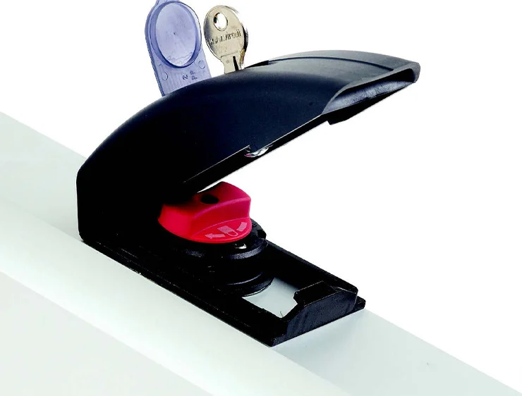

Bienvenido a Dussich Services
Nuestra experiencia para controlar tu entrada!
Nuestra experiencia para controlar tu entrada!


Destinato a chi desidera automatizzare il proprio cancello preservandone l'estetica, FAAC 770N è interrato, quindi invisibile e silenzioso.
L'installazione del sistema può essere effettuata in due fasi: interrando le cassette vuote contemporaneamente alle canaline elettriche, quindi aggiungendo i motori quando il cancello sarà pronto per essere automatizzato.
Il sistema FAAC 770N è autobloccante. Ciò garantisce il bloccaggio del cancello in qualunque posizione ed evita così l'installazione di un'elettroserratura.
La sicurezza antischiacciamento è garantita dal dispositivo elettronico di regolazione della coppia del motore presente sulla scheda di gestione (conforme alle norme europee EN 12445 e EN 12453).
Sblocco a chiave facile da usare.
info tecniche

Automatizaciones para puertas corredizas con peso desde 900kg hasta 3500kg.

Automatizaciones para puertas batientes con ancho desde 1,3mts hasta 7mts.

Barreras automáticas para carriles desde 2mts hasta 8mts.

Automatizaciones para puertas corredizas y batientes para accesos peatonales.